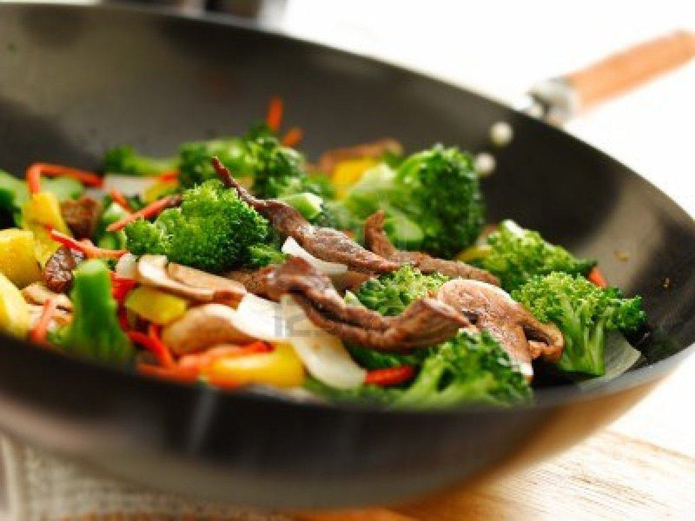

Nuestros salteados
Wok
En Kenko incorporamos nuestra sección de salteados al Wok a nuestros deliverys. Platos nutritivos elaborados en el momento con la combinación mas equilibrada y deliciosa de vegetales, semillas, pasta y carne, sutilmente condimentados con las mas exquisitas salsas orientales.